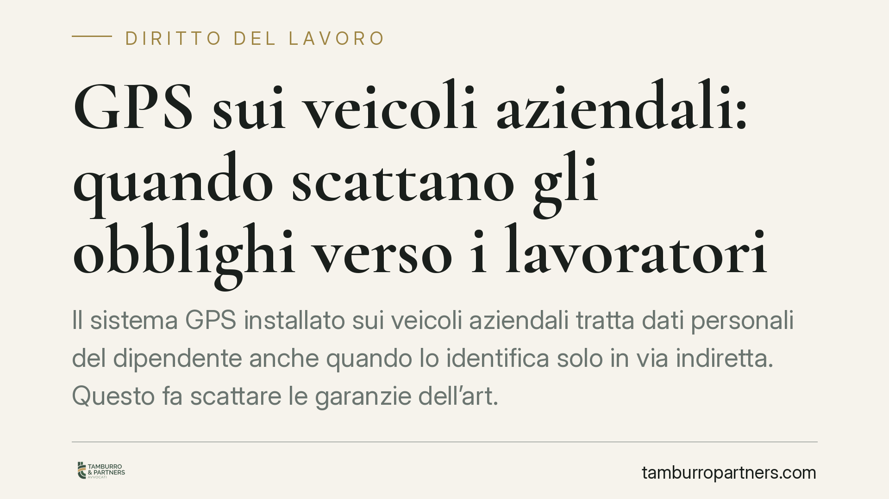

GPS sui veicoli aziendali: quando scattano gli obblighi verso i lavoratori
Il sistema GPS installato sui veicoli aziendali tratta dati personali del dipendente anche quando lo identifica solo in via indiretta. Questo fa scattare le garanzie dell'art. 4 dello Statuto dei Lavoratori e gli obblighi del GDPR. Per il datore significa procedura sindacale o autorizzazione dell'Ispettorato, informativa e minimizzazione. Vediamo cosa cambia in concreto e quali cautele adottare.

Il caso e lo stato della giurisprudenza
Una recente ordinanza della Corte di Cassazione (i cui estremi esatti restano da verificare presso le banche dati ufficiali prima di essere citati come precedente) torna su un tema ricorrente: la geolocalizzazione dei veicoli aziendali tramite GPS.
Il principio è netto. La rilevazione della posizione di un mezzo aziendale costituisce trattamento di dati personali del lavoratore anche quando quest'ultimo non è identificato in modo diretto, ma risulta comunque identificabile in via indiretta.
Cosa significa "identificabilità indiretta"
L'obiezione classica del datore è: "traccio il veicolo, non la persona". L'argomento non regge. Se, incrociando il dato di posizione con altre informazioni disponibili all'azienda (turni, assegnazione del mezzo, ordini di servizio), è possibile risalire a chi guidava, allora il lavoratore è identificabile.
L'art. 4, n. 1, GDPR (Reg. UE 2016/679) definisce dato personale ogni informazione relativa a persona identificata o identificabile. Basta la ragionevole possibilità di collegare il dato a un individuo. La finalità dichiaratamente organizzativa dell'impianto non muta questa qualificazione.
Inquadramento normativo
Il perno è l'art. 4 della L. 300/1970 (Statuto dei Lavoratori), riformato dal d.lgs. 151/2015. La norma distingue due categorie:
- Strumenti di controllo (art. 4, comma 1): impianti da cui deriva anche la possibilità di controllo a distanza dell'attività. Sono installabili solo per esigenze organizzative, produttive, di sicurezza del lavoro o tutela del patrimonio, e solo previo accordo sindacale con le rappresentanze aziendali o, in mancanza, previa autorizzazione dell'Ispettorato del Lavoro.
- Strumenti di lavoro (art. 4, comma 2): quelli utilizzati dal lavoratore per rendere la prestazione. Per questi non è richiesta la procedura di garanzia.
Il GPS non rientra di regola tra i meri strumenti di lavoro: la sua funzione di localizzazione lo colloca tra gli strumenti di controllo, con conseguente applicazione della procedura del comma 1.
Sul versante privacy operano il GDPR e il d.lgs. 196/2003 (Codice Privacy), come adeguato al Regolamento dal d.lgs. 101/2018. Rilevano in particolare:
- gli artt. 13-14 GDPR, sull'informativa da rendere agli interessati;
- l'art. 32 GDPR, sulle misure tecniche e organizzative di sicurezza e sulla corretta configurazione del sistema;
- l'art. 5 GDPR, sui principi di minimizzazione e limitazione della conservazione.
Implicazioni pratiche
Per il datore la conseguenza più delicata riguarda l'utilizzabilità dei dati. L'art. 4, comma 3, dello Statuto subordina l'uso delle informazioni raccolte — anche a fini disciplinari — al rispetto delle procedure di garanzia e all'adeguata informativa al lavoratore.
Se il GPS è stato installato senza accordo sindacale o autorizzazione dell'Ispettorato, o senza corretta informativa, i dati risultano inutilizzabili. Ciò significa che una contestazione disciplinare o un licenziamento fondati su quei dati rischiano di cadere per illegittimità dell'acquisizione della prova.
La finalità organizzativa legittima l'installazione, ma non esonera dal seguire l'iter. È un punto che va tenuto distinto: avere una ragione valida non equivale ad aver rispettato la procedura.
Cosa fare in concreto
- Mappare i dispositivi: censire tutti i mezzi dotati di GPS o telematica di bordo e verificare, per ciascuno, la sussistenza di accordo sindacale o autorizzazione dell'Ispettorato.
- Attivare la procedura ex art. 4, comma 1: dove manchi, avviare la contrattazione con le rappresentanze sindacali o presentare istanza all'Ispettorato territoriale del Lavoro prima di continuare a utilizzare il sistema.
- Rendere l'informativa: predisporre e consegnare ai lavoratori l'informativa ex artt. 13-14 GDPR, chiara su finalità, base giuridica, tempi di conservazione e destinatari dei dati.
- Minimizzare e configurare correttamente: limitare la raccolta a quanto strettamente necessario, disattivare la localizzazione fuori dall'orario di lavoro dove possibile, fissare tempi di conservazione proporzionati e adottare misure di sicurezza ex art. 32 GDPR.
- Rivedere le contestazioni in corso: verificare che eventuali procedimenti disciplinari non poggino su dati raccolti irregolarmente, per evitare vizi di utilizzabilità.
Consigliamo di documentare per iscritto ogni passaggio della procedura e di conservare copia di accordi, autorizzazioni e informative: in caso di contenzioso l'onere di provare la legittimità del trattamento grava sul datore.
---
*Contributo informativo a cura di Tamburro & Partners - Avv. Giuseppe Tamburro. Non costituisce parere legale.*
Ogni storia di lavoro ha i suoi tempi.
Se gestisci HR e vuoi un confronto su contenzioso, ispezioni o licenziamenti, scrivi allo studio. Ti rispondiamo entro un giorno lavorativo.